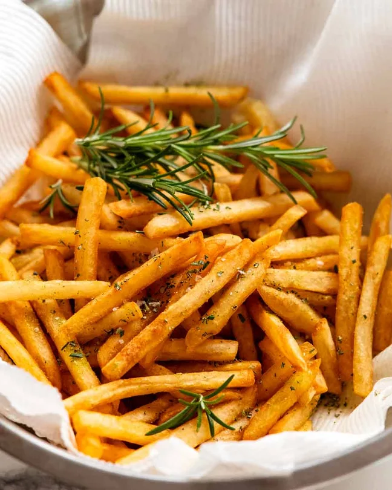

Chippies

Description
Find below the recipe to yummy chippies/p>
Ingredients
- 1kg / 2lb (3-4) floury potatoes (Aus: Sebago/dirt aka brushed, US: Russet/Idaho, UK: Maris Piper, King Edward)
- 2 tbsp white vinegar
- 1 tbsp cooking salt/kosher salt
- 1 litre/quart canola/vegetable oil
Seasoning (choose):
- Salt - table salt or sea salt flakes
- Shaker fries seasoning
- Rosemary salt
Instructions
- Cut: Peel the potatoes. Cut into 6mm / 1/4" French fries using a serrated knife.
- Keep cut fries submerged in a bowl of water bowl to prevent them from going brown while you cut the remainder. (No need for actual soaking beyond this).
- Rinse: Transfer potatoes to a colander and rinse under tap water for 15-20 seconds.
- Simmer: Place fries in a large pot with 2 litres/quarts of cold tap water, vinegar and salt. Bring to a boil over high heat then immediately reduce stove to low so the surface is rippling gently, not big bubbles. Cook for 10 minutes then careful remove using a slotted spoon into a colander (do not tip the colander, fries will break).
- Dry 5 min: Spread the fries on 2 tea towel lined trays. Leave them to steam dry for 5 minutes.
- Separate the fries into 3 batches (for cooking).
Fry #1:
- Heat oil to 205C/400F over medium heat.
- 10 sec pause: Lower 1/3 of Batch 1 fries into the oil using a slotted spoon. WAIT 10 seconds, add another 1/3 of the fires, wait 10 seconds, then add the remaining batch 1 of fries.
- 50 sec fry: Fry for 50 seconds, moving them around once or twice. Then remove with a slotted spoon onto 2 paper towel lined trays, spread out in a single layer. The fries will still be white and floppy.
- Repeat steps 1-3 with batches 2 and 3, ensuring the oil is back at 205C/400F before cooking.
Fry #2:
- 30 min cool: Leave fries to cool for 30 minutes.
- Line a large bowl: with paper towels - for draining and tossing
- Fry #2: Heat oil to 205C/400F. Fry half the French fries for 4 minutes, moving them around twice, or until golden brown and crispy. Drain in the lined bowl, then repeat with remaining fries.
Season & Serve
Sprinkle fries with salt or seasoning of choice. Toss and serve!
Home